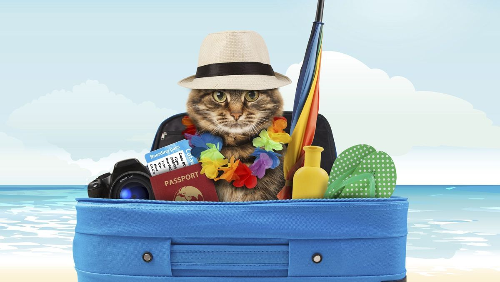

Liste de Mariage
Nous vous proposons de nous accompagner dans nos projets futurs à travers cette liste de mariage, où nous listons des options de cadeaux qui nous raviraient.
Pour des raisons de simplicité, nous nous permettons de vous laisser nos coordonnées bancaires ci-après, afin que vous puissiez réaliser un virement selon votre convenance. N'hésitez pas à préciser le cadeau sur lequel vous souhaiteriez contribuer !
IBAN compte joint: Rosalie Scholz, La Banque Postale, FR8620041000014207442M02071
Projets & Cadeaux
Voyage de noces en Italie
Bouquet final de notre mariage, nous prévoyons une semaine (sans Joséphine !) dans le nord de l'Italie. Road trip, plages, gastronomie, soleil, nous ésperons que tous les ingrédients seront au rendez-vous pour une lune de miel enchantée !

Paire d'enceintes Hi-Fi Raven Héritage
Cadeau pour Joséphine plus que pour nous-même, nous souhaitons nous équiper d'un système de son de qualité proposé par la Maison du Haut-Parleur. Il est important d'éduquer les oreilles de notre petit chou dès son plus jeune âge !

Oeuvre d'art Galerie SETZE / LEPARTKING
Rosalie a un coup de coeur pour l'ambiance et le style de la galerie où nous organisons la réception. Si l'oeuvre n'a pas encore été choisie, nous souhaiterions garder une trace de cette journée unique du mariage à travers une pièce de leur catalogue.

VDI Jazz (Voyage à Durée Indéterminée)
Sur un autre registre, nous nous proposons d'envoyer Jazz en vacances quelques temps. Une semaine de Club Med Croquettes pour un calme total à la maison !
